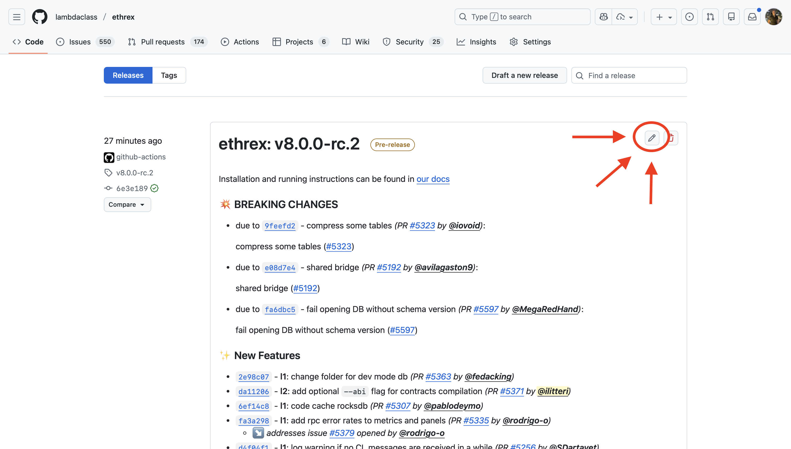
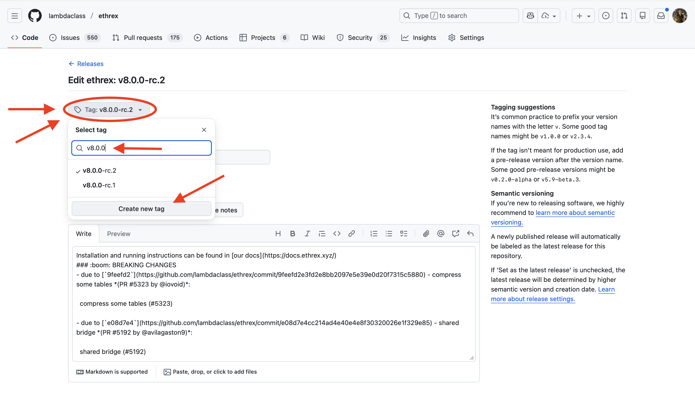
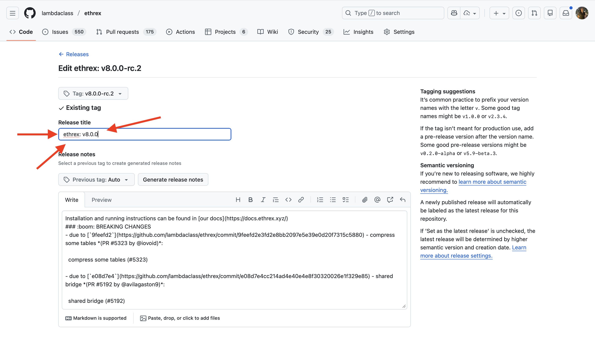
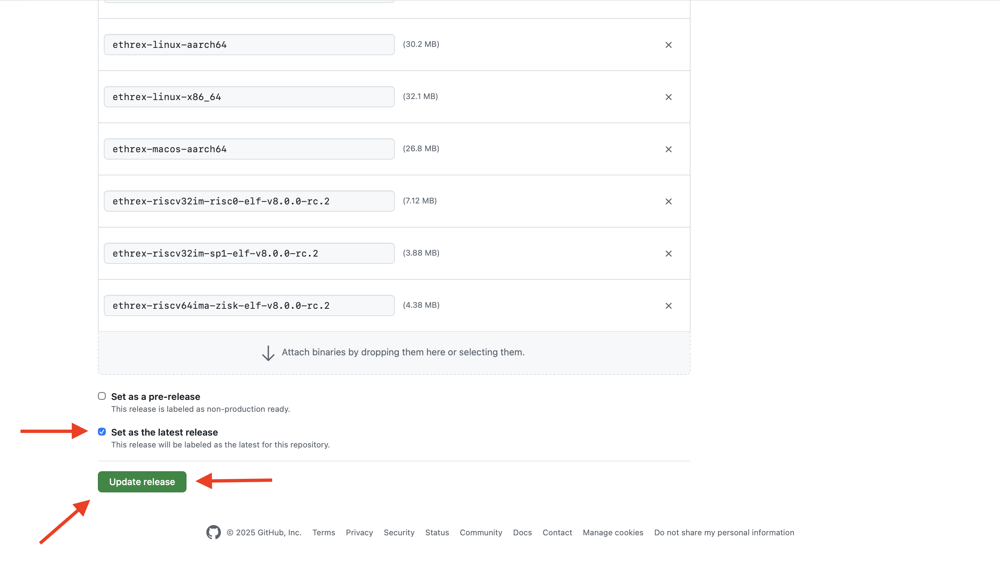

How to Release an ethrex version
Releases are prepared from dedicated release branches and tagged using versioning.
1st - Create release branch
Branch name must follow the format release/vX.Y.Z.
Examples:
release/v1.2.0release/v3.0.0release/v3.2.0
2nd - Bump version
The version must be updated to X.Y.Z in the release branch. There are multiple Cargo.toml and Cargo.lock files that need to be updated.
First, we need to update the version of the workspace package. You can find it in the Cargo.toml file in the root directory, under the [workspace.package] section.
Then, we need to update three more Cargo.toml files that are not part of the workspace but fulfill the role of packages in the monorepo. These are located in the following paths:
crates/l2/prover/src/guest_program/src/sp1/Cargo.tomlcrates/l2/prover/src/guest_program/src/risc0/Cargo.tomlcrates/l2/prover/src/guest_program/src/zisk/Cargo.tomlcrates/l2/prover/src/guest_program/src/openvm/Cargo.tomlcrates/l2/tee/quote-gen/Cargo.toml
After updating the version in the Cargo.toml files, we need to update the Cargo.lock files to reflect the new versions. Run make update-cargo-lock from the root directory to update all the Cargo.lock files in the repository. You should see changes in at most the following paths:
- In the root directory
crates/l2/prover/src/guest_program/src/sp1/Cargo.lockcrates/l2/prover/src/guest_program/src/risc0/Cargo.lockcrates/l2/prover/src/guest_program/src/zisk/Cargo.lockcrates/l2/prover/src/guest_program/src/openvm/Cargo.lockcrates/l2/tee/quote-gen/Cargo.lock
Then, go to the CLI.md file located in docs/ and update the version of the --builder.extra-data flag default value to match the new version (for both ethrex and ethrex l2 sections).
Finally, stage and commit the changes to the release branch.
An example of a PR that bumps the version can be found here.
3rd - Create & Push Tag
Create a tag with a format vX.Y.Z-rc.W where X.Y.Z is the semantic version and W is a release candidate version. Other names for subversions are also accepted. Example of valid tags:
v0.1.3-rc.1v0.0.2-alpha
git tag <release_version>
git push origin <release_version>
After pushing the tag, a CI job will compile the binaries for different architectures and create a pre-release with the version specified in the tag name. Along with the binaries, a tar file is uploaded with the contracts and the verification keys. The following binaries are built:
| name | L1 | L2 stack | Provers | CUDA support |
|---|---|---|---|---|
| ethrex-linux-x86-64 | ✅ | ❌ | - | - |
| ethrex-linux-aarch64 | ✅ | ❌ | - | - |
| ethrex-linux-macos-aarch64 | ✅ | ❌ | - | - |
| ethrex-l2-linux-x86-64 | ✅ | ✅ | SP1 - RISC0 - Exec | ❌ |
| ethrex-l2-linux-x86-64-gpu | ✅ | ✅ | SP1 - RISC0 - Exec | ✅ |
| ethrex-l2-linux-aarch64 | ✅ | ✅ | SP1 - Exec | ❌ |
| ethrex-l2-linux-aarch64-gpu | ✅ | ✅ | SP1 - Exec | ✅ |
| ethrex-l2-macos-aarch64 | ✅ | ✅ | Exec | ❌ |
Also, two docker images are built and pushed to the Github Container registry:
ghcr.io/lambdaclass/ethrex:X.Y.Z-rc.Wghcr.io/lambdaclass/ethrex:X.Y.Z-rc.W-l2
A changelog will be generated based on commit names (using conventional commits) from the last stable tag.
4th - Test & Publish Release
Once the pre-release is created and you want to publish the release, go to the release page and follow the next steps:
-
Click on the edit button of the last pre-release created

-
Manually create the tag
vX.Y.Z
-
Update the release title

-
Set the release as the latest release (you will need to uncheck the pre-release first). And finally, click on
Update release
Once done, the CI will publish new tags for the already compiled docker images:
ghcr.io/lambdaclass/ethrex:X.Y.Z,ghcr.io/lambdaclass/ethrex:latestghcr.io/lambdaclass/ethrex:X.Y.Z-l2,ghcr.io/lambdaclass/ethrex:l2
5th - Update Homebrew
Disclaimer: We should automate this
- Commit a change in https://github.com/lambdaclass/homebrew-tap/ bumping the ethrex version (like this one).
-
The first SHA is the hash of the
.tar.gzfrom the release. You can get it by downloading theSource code (tar.gz)from the ethrex release and runningshasum -a 256 ethrex-v3.0.0.tar.gz -
For the second one:
-
First download the
ethrex-l2-macos-aarch64binary from the ethrex release -
Give exec permissions to binary
chmod +x ethrex-l2-macos-aarch64 -
Create a dir
ethrex/3.0.0/bin(replace the version as needed) -
Move (and rename) the binary to
ethrex/3.0.0/bin/ethrex(the lastethrexis the binary) -
Remove quarantine flags (in this case,
ethrexis the root dir mentioned before):xattr -dr com.apple.metadata:kMDItemWhereFroms ethrex xattr -dr com.apple.quarantine ethrex -
Tar the dir with the following name (again,
ethrexis the root dir):tar -czf ethrex-3.0.0.arm64_sonoma.bottle.tar.gz ethrex -
Get the checksum:
shasum -a 256 ethrex-3.0.0.arm64_sonoma.bottle.tar.gz -
Use this as the second hash (the one in the
bottlesection)
-
-
- Push the commit
- Create a new release with tag
v3.0.0. IMPORTANT: attach theethrex-3.0.0.arm64_sonoma.bottle.tar.gzto the release
6th - Merge the release branch via PR
Once the release is verified, merge the branch via PR.
Dealing with hotfixes
If hotfixes are needed before the final release, commit them to release/vX.Y.Z, push, and create a new pre-release tag. The final tag vX.Y.Z should always point to the exact commit you will merge via PR.
Troubleshooting
Failure on "latest release" workflow
If the CI fails when setting a release as latest (step 4), Docker tags latest and l2 may not be updated. To manually push that changes, follow these steps:
- Create a new Github Personal Access Token (PAT) from the settings.
- Check
write:packagespermission (this will auto-checkrepopermissions too), give a name and a short expiration time. - Save the token securely.
- Click on
Configure SSObutton and authorize LambdaClass organization. - Log in to Github Container Registry:
docker login ghcr.io. Put your Github's username and use the token as your password. - Pull RC images:
docker pull --platform linux/amd64 ghcr.io/lambdaclass/ethrex:X.Y.Z-rc.W
docker pull --platform linux/amd64 ghcr.io/lambdaclass/ethrex:X.Y.Z-rc.W-l2
- Retag them:
docker tag ghcr.io/lambdaclass/ethrex:X.Y.Z-rc.W ghcr.io/lambdaclass/ethrex:X.Y.Z
docker tag ghcr.io/lambdaclass/ethrex:X.Y.Z-rc.W-l2 ghcr.io/lambdaclass/ethrex:X.Y.Z-l2
docker tag ghcr.io/lambdaclass/ethrex:X.Y.Z-rc.W ghcr.io/lambdaclass/ethrex:latest
docker tag ghcr.io/lambdaclass/ethrex:X.Y.Z-rc.W-l2 ghcr.io/lambdaclass/ethrex:l2
- Push them:
docker push ghcr.io/lambdaclass/ethrex:X.Y.Z
docker push ghcr.io/lambdaclass/ethrex:X.Y.Z-l2
docker push ghcr.io/lambdaclass/ethrex:latest
docker push ghcr.io/lambdaclass/ethrex:l2
- Delete the PAT for security (here)